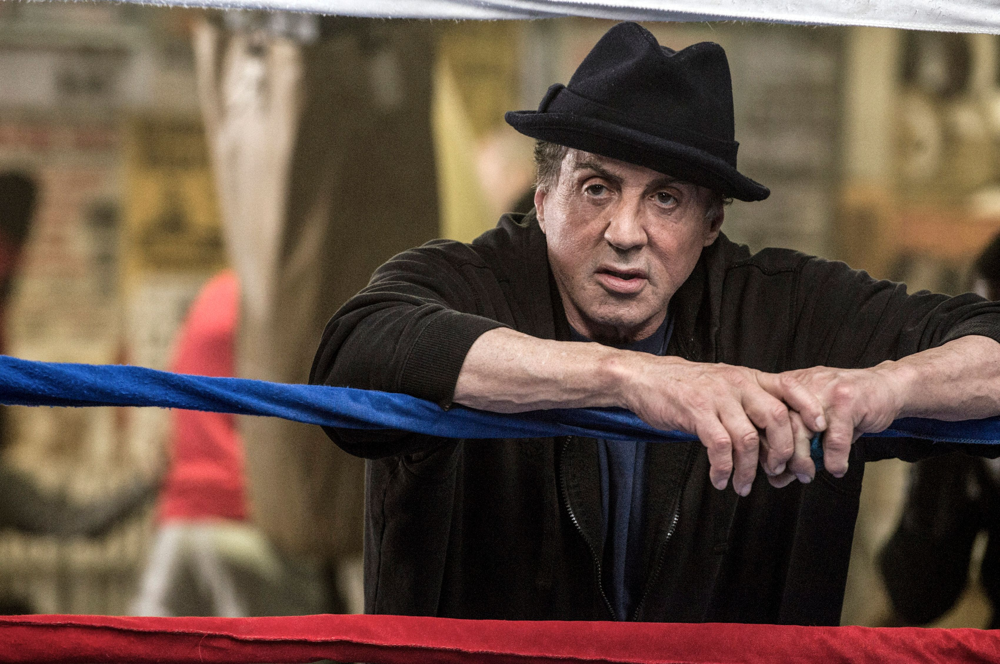
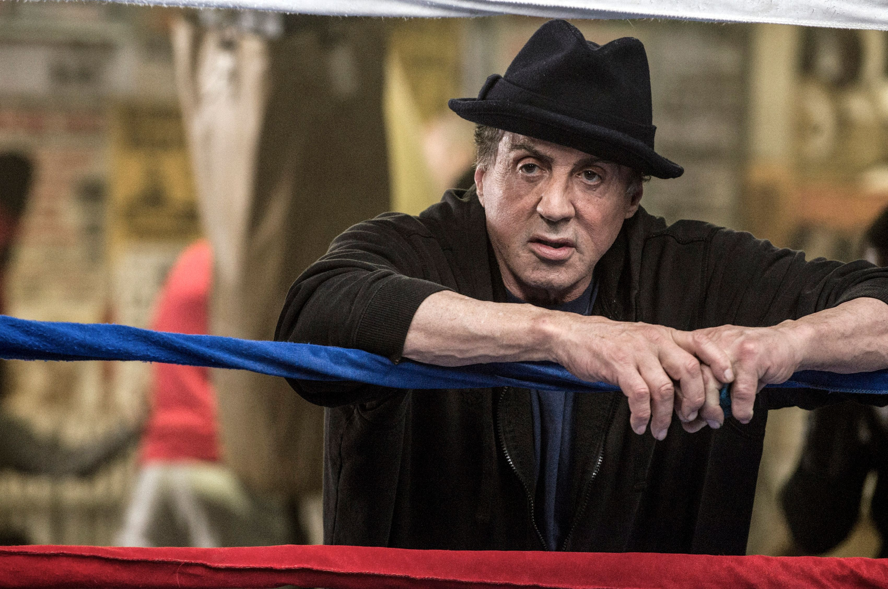

Es interpretado por el actor Michael B.
Adonis es el hijo de Apollo Creed, un famoso
boxeador y rival-amigo de Rocky Balboa.
Rocky es un hombre mayor que ha dejado atrás su carrera en el
boxeo y vive una vida tranquila en Filadelfia, administrando su
restaurante "Adrian's", en honor a su difunta esposa. Adonis, el
hijo ilegítimo de su antiguo amigo y rival Apollo Creed, busca a br
Rocky para que lo entrene y lo guíe en su carrera como boxeador